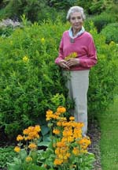

Container left
Odwiedziłam ten ogród pod koniec
października. Celowo wybrałam jesień, bo wtedy widać najlepiej, jak ogród jest skonstruowany. Nie przyćmiewa schematu szaleństwo kolorów i bogactwo odcieni. Po przekwitnięciu, rośliny pozostawiają widok głównej tkanki ogrodu. Można wtedy skupić się na zbadaniu, co ten ogród tworzy.
Mimo słoty, lekkiego deszczu i drogich
biletów, po alejkach spacerowało sporo ludzi, także z dziećmi. W Tea Room, czyli przeszklonym pawilonie, gdzie można zjeść kilka smacznych dań i
spróbować domowych wypieków, trudno było o
wolne miejsce.
Beth Chatto jest najbardziej
znaną grodniczką w Anglii.
Stworzyła ogród, do jakiego przez cały rok przyjeżdżają goście z różnych stron świata.
Stworzyła go na nieurodzajnej ziemi, w miejsce ubogiej farmy. Był rok 1960.

Niegdyś Beth Chatto sama oprowadzała gości, a do niedawna
osobiście nadzorowała prace w ogrodzie.
Poza własnym ogrodem, miała na głowie tysiące słuchaczy w
różnych zakątkach świata, dokąd jeździła z wykładami na temat zakładania
ogrodów w specyficznych warunkach. Napisała także kilkanaście książek o
uprawie roślin ozdobnych.
Tu opowiem o tym, co wydało mi się najciekawsze w tym ogrodzie.